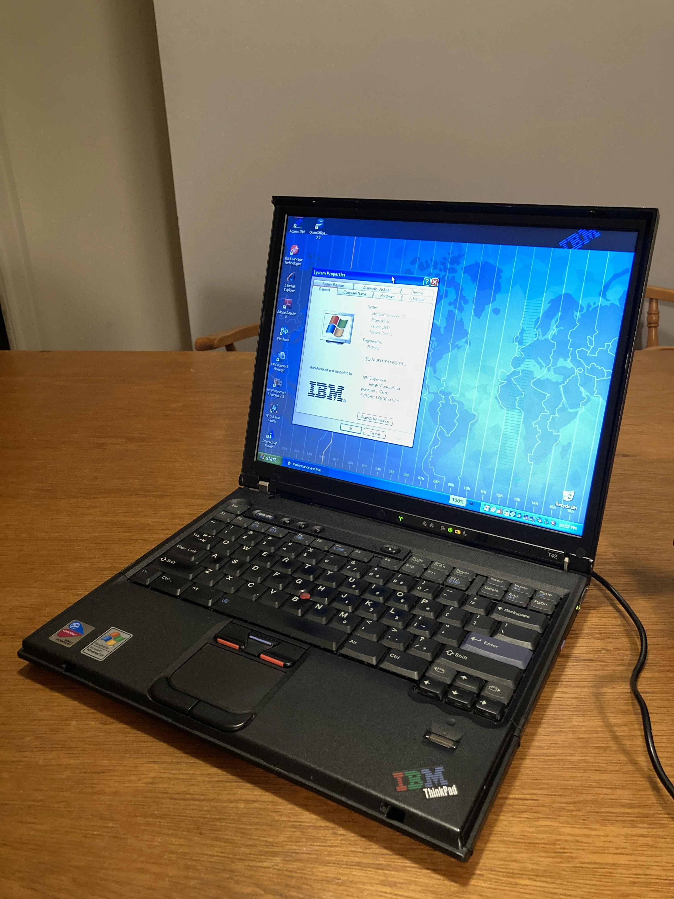

Home Home |
 Art Art |
 Contact Contact |
Interests |
You really want to know more about me..? |
|
So... I mean, you can take a look for yourself then. Just click the button below- InterestsMore about me |

Music I play the piano. In fact, I've been playing for the past 8 years of my life. I got interested in playing it after hearing my brother play it every day. Now, I am learning the 10th level in the Royal Conservatory of Music piano program. I am also pretty good at the violin, which I started learning in grade 8. I'm also slightly experienced with xylophones, since I played one for an entire year in grade 7. In that year, my teacher let me play drums, too, although I'll admit I'm pretty bad at it. I also own a baby grand, by the way :D |

ThinkPad I got my first laptop when I was 6. Yes, I know, sounds pretty crazy. I also got my first phone when I was 7, in the morning of Christmas. And yes, I'm very thankful my dad provided me with so many opportunities. Since then, I have switched through over 6 laptops, 3 of which were ThinkPads and have gotten sold for some decent money. I often buy and sell laptops for a higher price than I bought it for (second-hand), and since my parents don't really provide me with a lot of money, most electronics I own (e.g. phone, laptop, etc.) were bought with my own money - much of it was made flipping laptops. You could say, I'm pretty obsessed with ThinkPads. I really like them... mostly because my dad has only bought ThinkPads after his T42 from 2008. They really are built like tanks. |
|
Repairing My dad is a trashpicker. It's also the reason my garage is filled with a dozen bikes, most of which are completely functioning, since he taught me how to fix them. I then got quite obsessed with fixing things, starting with a robot vacuum all the way to my second phone he gave me - an iPhone 5C. The accomplished feeling after fixing such a small thing thats practically glued together for the first time, is pretty insane... Since those days, I've also repaired many laptops, repasted them, and stuff on those lines. I once repasted 9 all-in-one computers in 5 hours while in China, at my uncle's company. It was pretty cool. |
IT stuff After getting very obsessed with ThinkPads, I went on to buy a server- yes, I know, pretty weird. I can explain... I wanted to make a home server with a few terabytes so that my whole family could access files more easily without needing to go on each other's computers. Now obviously, the best way would be to use an old laptop or something. What's the fun in that? Instead, I went for a pretty cheap server... A HP DL360e Gen8, which I bought for a really good 70 CAD. It was really fun setting it up, although it was pretty hilarious as I didn't even have a keyboard lying around because my whole family has only bought laptops after the PS/2 keyboard/mouse eras. |